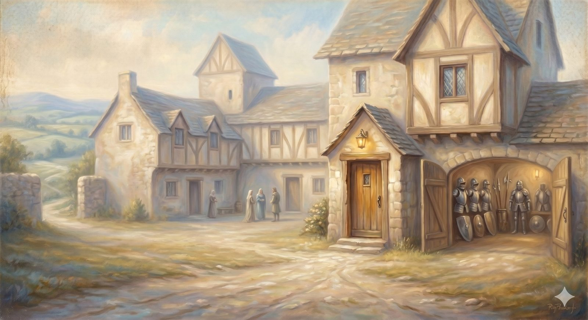

Palace Beautiful
The house built for the relief of pilgrims — the church, the communion of saints, and the armory of the creeds.
"By this all people will know that you are my disciples, if you have love for one another." John 13:35 (ESV)
Just past the lions, at the top of the hill, stands a stately house called Palace Beautiful, built — Bunyan tells us — by the Lord of the hill specifically for the relief and security of pilgrims. Christian is met at the door, questioned kindly, taken in, fed, and given a room called Peace whose window opens toward the sunrise. He stays. He is shown the house's treasures and its armory. And when he leaves, he leaves better equipped than he came.
The Palace is the church — and its placement on the road is deliberate. It comes after the Cross and partway up the long climb, because that is exactly when a pilgrim discovers he was never meant to make this journey alone. The Christian life is not a solo expedition with occasional company. It is a road walked together, with rest and provision and armor laid up for the journey, in a house built on purpose for people like you.
Part OneWhat the church actually is
"Church" is one of the most overloaded words we use — it can mean a building, a denomination, a Sunday service, or the whole company of God's people across time. So the road needs to be precise, and the Reformed tradition offers a distinction worth carrying: the visible church and the invisible church.
The invisible church is the whole company of those truly united to Christ by living faith — known fully only to God, gathered out of every generation and every tradition, the church as it actually is in his sight. The visible church is the gathered community as it appears in history: those who profess faith, receive the sacraments, and live under the Word — with genuine believers and pretenders mixed together, and all of them imperfect. Jesus described it honestly in the parable of the wheat and the weeds: not everything in the field is wheat, and the sorting waits until the harvest. This is not a loophole for cynicism; it is realism that protects you from two mistakes — expecting the visible church to be spotless, and abandoning it because it isn't.
📖 The Scripture behind this Entailed›
The claim: The church exists in two aspects: the visible church (the professing, sacrament-receiving community in history, believers and pretenders mixed) and the invisible church (all truly united to Christ, known fully only to God).
- Matthew 13:24–30 (ESV) — “Let both grow together until the harvest …” (the wheat and the weeds)The visible community contains both genuine and false until the final sorting.
- 2 Timothy 2:19 (ESV) — “The Lord knows those who are his.”There is a company truly his, known with certainty only to God.
- 1 John 2:19 (ESV) — “They went out from us, but they were not of us …”Some within the visible body were never truly of the invisible one.
The terms 'visible' and 'invisible church' are the tradition's; the underlying reality is drawn from Scripture by good and necessary consequence. A widely shared Protestant distinction.
At its heart, though, the church is something far warmer than a definition. It is meant to be the visible shape of the love that has always existed between the Father, the Son, and the Spirit — a community whose life together makes that self-giving love legible to a watching world. That is why Jesus could say the mark by which everyone would know his disciples was not their doctrine or their success but their love for one another.
📖 The Scripture behind this Direct›
The claim: The defining mark Jesus gave for his disciples is not their doctrine or success but their love for one another — the community meant to make the Triune love visible.
- John 13:34–35 (ESV) — “By this all people will know that you are my disciples, if you have love for one another.”Jesus names love — not doctrine or numbers — as the identifying mark.
- John 17:20–21 (ESV) — “that they may all be one, just as you, Father, are in me, and I in you …”The church’s unity is patterned on, and reflects, the love within the Trinity.
- 1 John 4:11–12 (ESV) — “if we love one another, God abides in us … his love is perfected in us.”Mutual love makes the invisible God’s love visible in the community.
Love as the identifying mark is stated directly by Jesus. The three classic 'marks of a true church' named on the page are the Reformers' formulation — a sound distillation, but traditional rather than a direct quotation of Scripture.
Part TwoThe marks of a true church — and the red flags
If you are looking for such a community — especially if you are coming in wounded, having been hurt by one before — you need to know what actually makes a church a church, as opposed to merely a gathering with a steeple. The Reformers named the marks plainly: the Word of God truly preached, the sacraments rightly administered, and discipline lovingly exercised. Where the gospel is genuinely proclaimed, where baptism and the Lord's Supper are honored as Christ gave them, and where the community takes holiness seriously without crushing people — there is a true church, however small or unimpressive.
Just as worth naming are the warning signs, because they are how good people end up wounded. Be cautious of a church organized around one unaccountable personality; of a culture where questions are treated as disloyalty; of secrecy about money or power; of a leadership that demands and shames rather than feeds and tends. A healthy church will not be perfect — you should manage that expectation gently, in yourself and others — but it will be safe in the way a good home is safe: the kind of place where the bruised reed is not broken.
In plain terms
You are not looking for a flawless church — there isn't one, and a community that claims to be is showing you a red flag, not a virtue. You are looking for an honest one: where the gospel is really preached, the sacraments are honored, people are cared for, and questions are welcome.
If a previous church was the wound, that is real, and you are allowed to be careful. The marks above are how you tell a safe house from the one that hurt you.
Part ThreeThe armory and the records
Bunyan's Palace has two features the pilgrim is shown before he leaves. One is a room full of the records of those who walked the road in earlier generations — a reminder that he joins a story already long underway, a great cloud of pilgrims who finished. The other is an armory, stocked with the weapons and armor the Lord of the hill provides for the journey ahead, and Christian is fitted out from it before he descends.
The church's armory is, among other things, the creeds — the short, hard-won summaries in which the people of God, fighting off error in century after century, set down what must be believed. They are not a substitute for Scripture; they are Scripture's load-bearing truths gathered into a form you can carry into battle. The oldest and simplest is the Apostles' Creed, and it is worth taking up here, in full, as the armor it is:
I believe in God, the Father almighty, creator of heaven and earth. I believe in Jesus Christ, his only Son, our Lord, who was conceived by the Holy Spirit, born of the Virgin Mary, suffered under Pontius Pilate, was crucified, died, and was buried; he descended to the dead. On the third day he rose again; he ascended into heaven, is seated at the right hand of the Father, and will come to judge the living and the dead. I believe in the Holy Spirit, the holy catholic Church, the communion of saints, the forgiveness of sins, the resurrection of the body, and the life everlasting. Amen.
The Apostles' Creed
That word catholic, in its old sense, simply means universal — the whole church, of every time and place. The deeper armory holds more: the Nicene Creed, which guards the full deity of Christ; the Chalcedonian Definition, which holds his two natures together without confusion; the Athanasian Creed, which spells out the Trinity with unrelenting care. You can take them up in the armory, with the story of the battle each one was forged to win. For now it is enough to be fitted with the first and oldest, and to feel its weight: you believe what the whole company of pilgrims has believed.
You join a story already long underway — a great cloud of pilgrims who walked this road and finished it.
The rooms of this house
The Armory
The creeds, hung as weapons — the battles each was forged to win.
Open nowThe Record Room
The cloud of witnesses — the whole sweep of church history, by age.
OverviewThe Chamber of Peace
Rest and the assurance of the saints — a window facing the sunrise.
OverviewThe Porter's Lodge
Finding a healthy church — what to look for, and what to watch for.
OverviewChristian does not stay in the Palace forever; no pilgrim does. Rested, fed, and armed, he is led down the far side of the hill — and the descent is steep, into a valley where the armor he was given will be tested at once. For just below the house of rest, a dragon is waiting.